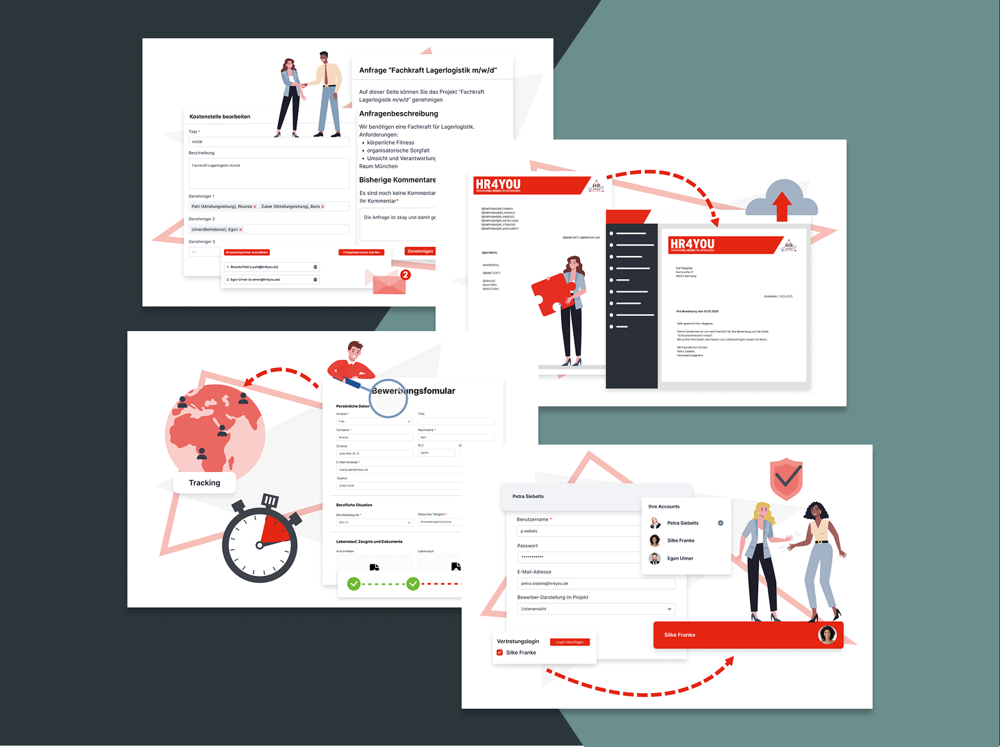
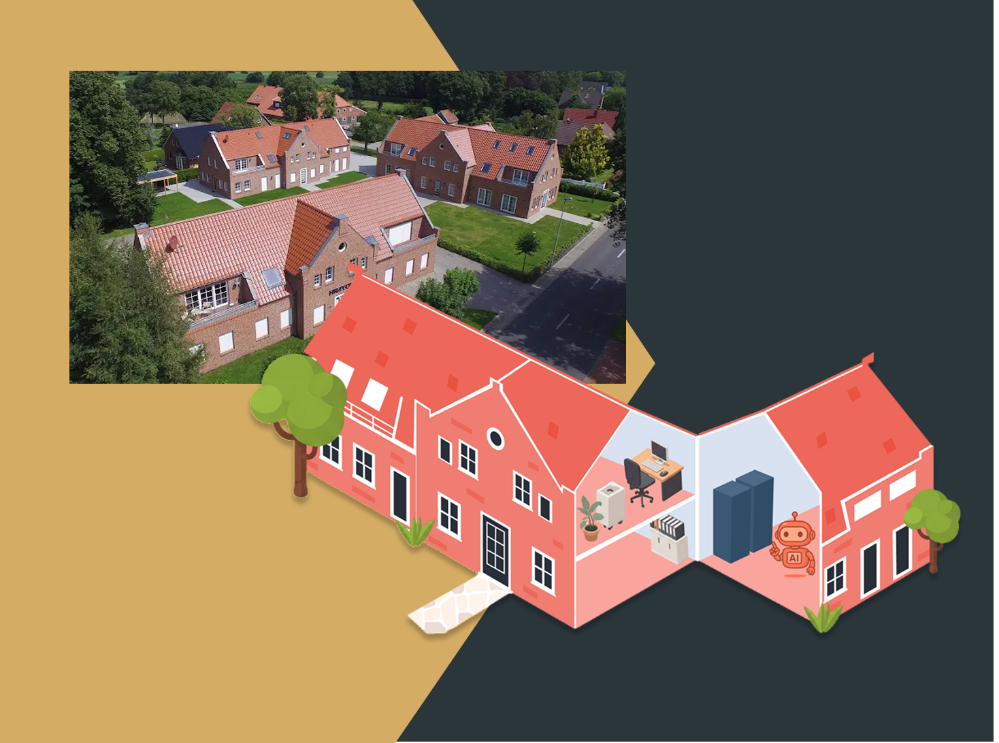

- Design-Fundament: Anwendung zeitloser Gestaltungsregeln für visuelle Balance.
- Typografische Präzision: Sicherer Umgang mit Hierarchien und Lesbarkeit.
- Effizienter Transfer: Adaption klassischer Design-Prinzipien auf moderne Workflows.
- Komponenten-Logik: Methodische Erstellung von Assets für globale Konsistenz.
- Design-Systematik: Definierte Farb- und Style-Guides für eine klare Sprache.
- Skalierbarkeit: Aufbau von wiederholbaren Design-Prinzipien für wachsende Projekte.

Marketplace-Grafiken: Produkte visuell unterstützen
Erstellung unterstützender Grafiken für die Produkt-Erweiterungen eines digitalen Marketplaces. Der Fokus lag auf der klaren Visualisierung komplexer Funktionen und Mehrwerte.

Firmengebäude-Visualisierung (KI-zentriert)
Nachbau des Firmengebäudes als grafisches Asset. Die Visualisierung dient dazu, das Thema KI und Innovation in den Kontext der realen Umgebung zu setzen und eine visuelle Brücke zur Marke zu schlagen.

Design des anpassbaren KI-Bots
Gestaltung des KI-Bots für die Systemintegration. Der Fokus lag auf einer modularen und anpassbaren Gestaltung, um verschiedene Zustände und Interaktionen lebendig darzustellen.